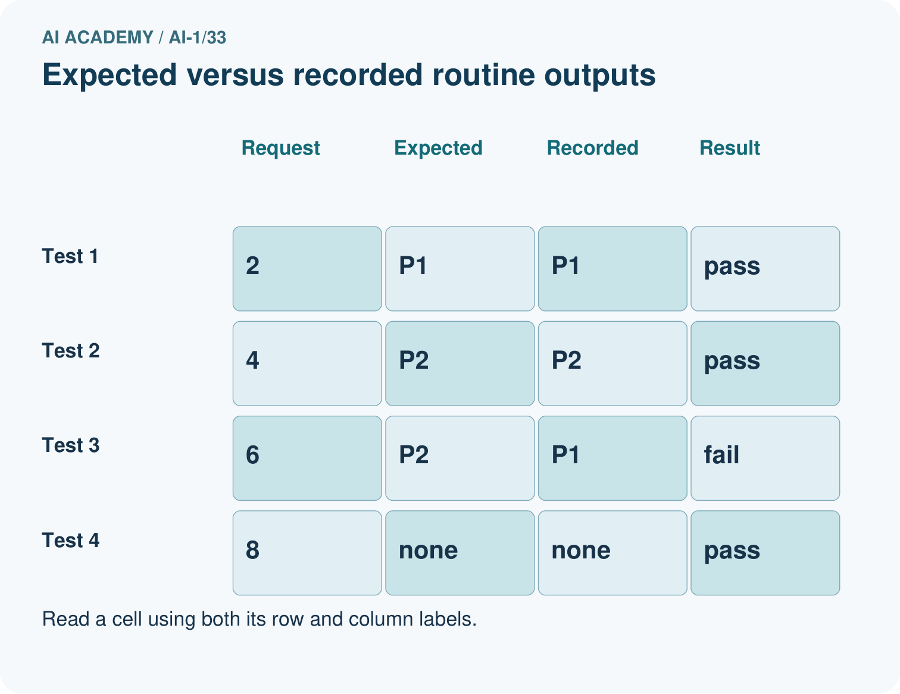
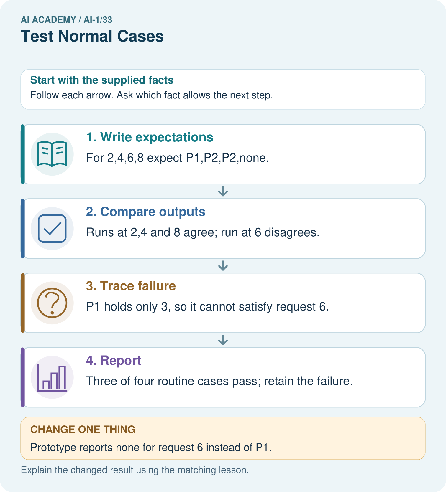
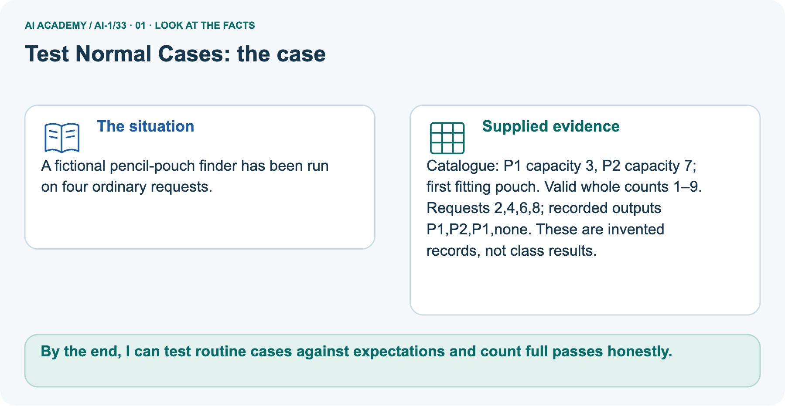
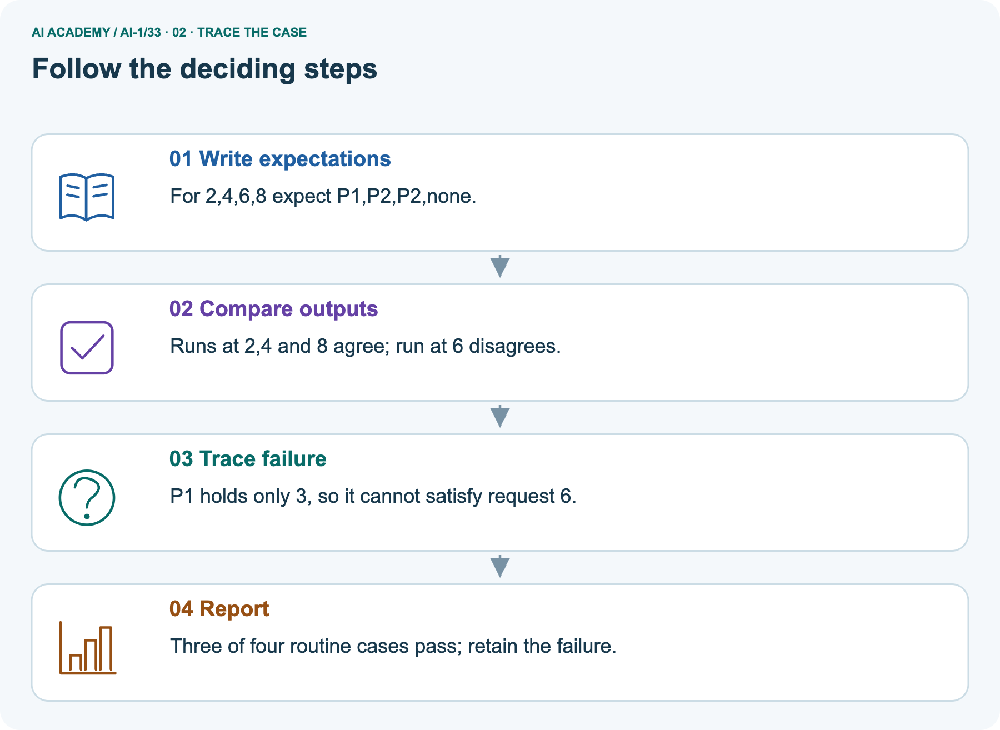
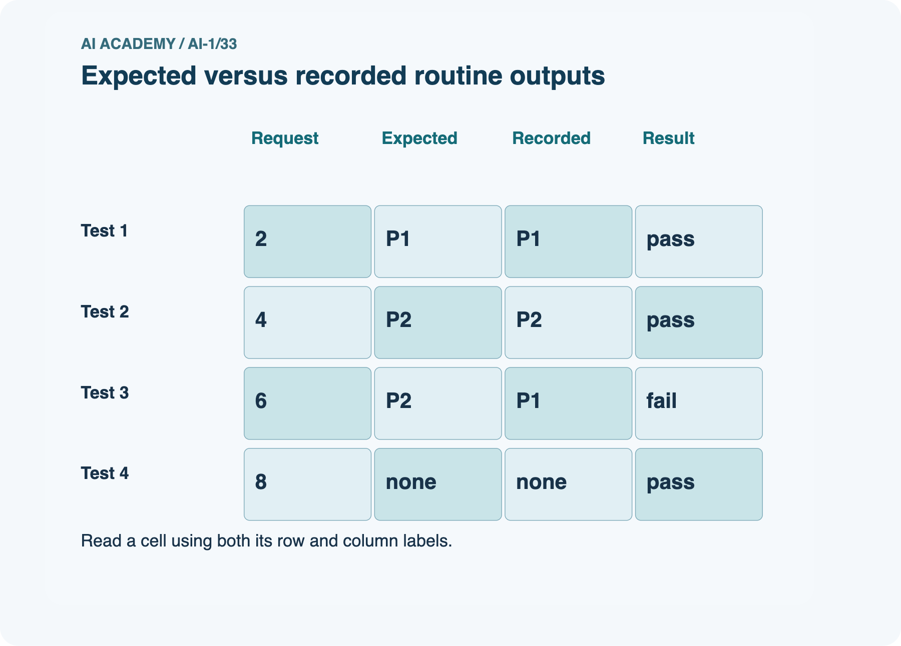
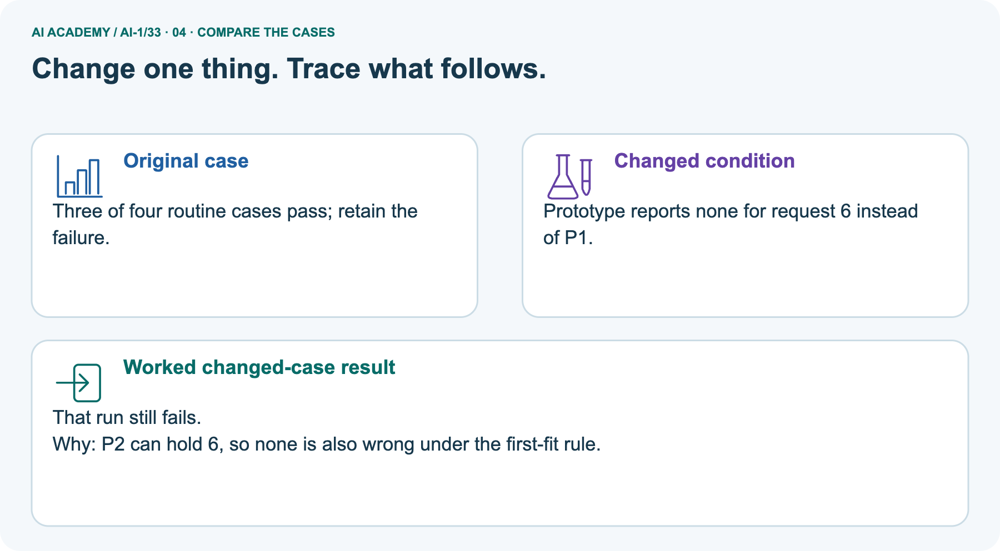
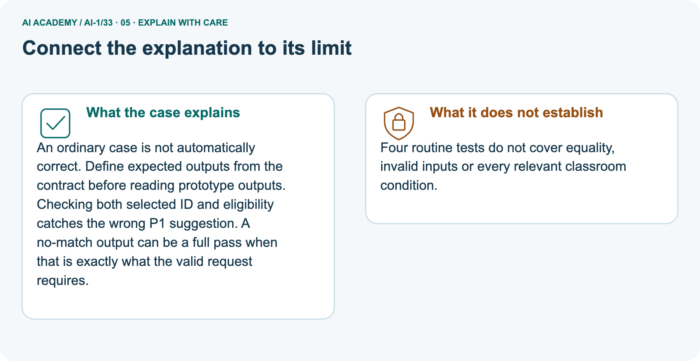
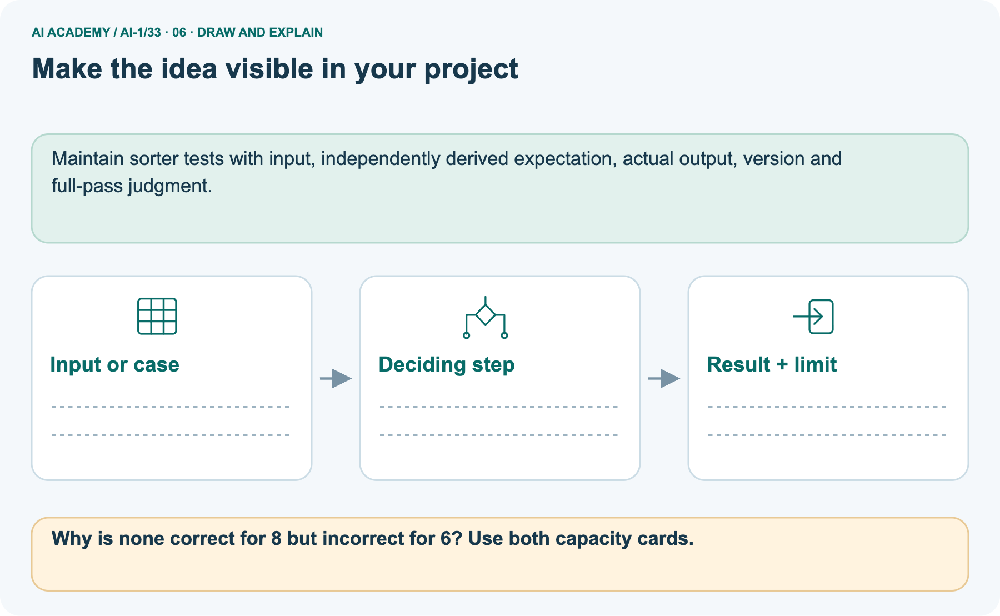

AI Academy · Level 1 · Grade 6 · Week 33 · Workbook
Test Normal Cases
Learn to understand, design, build, test and explain AI systems responsibly.
Project: Helpful Classroom Sorter
THE CONNECTED WEEK
One connected routine-testing record.
Prepare R-case expectations, collect both methods’ traces, audit Q0 and judge the independent equipment record.
Keep one habit: Keep expected outputs, actual reasons, pass judgments, versions and failures together.
Main lesson · Section 1
Recall: reconnect earlier ideas
Retrieve before opening notes.
Retrieve and explain
Try the recall before opening notes. Then use a different colour or a labelled second line to correct your explanation.
Without opening the old lesson, explain one key idea from Build a Paper Prototype. Give an example and a mistake that the idea helps you avoid.
Without opening the old lesson, explain one key idea from Choose Inputs and Outputs. Give an example and a mistake that the idea helps you avoid.
Without opening the old lesson, explain one key idea from Verify Important Outputs. Give an example and a mistake that the idea helps you avoid.
Earlier wording, alternatives and picture transcripts
Build a Paper Prototype
Choose Inputs and Outputs
Verify Important Outputs
Main lesson · Section 12
W1 · Prepare routine expectations before running
Use the standalone catalogue and define the full-pass criterion.
Your evidence record
Standalone activity-test reference: B1 Bookmark drawing (10 min, quiet Yes), B2 Story circle (8 min, quiet No), B3 Pattern puzzle (12 min, quiet Yes), B4 Tower challenge (15 min, quiet No), in that order. Valid minutes are whole 0–30; Quiet required is Yes/No. Require time fit AND (quiet not required OR activity quiet), choose first fit, otherwise no match; invalid input needs clarification. P1 validates, resets at B1 each request, advances after failure and stops at the first fit or end; the manual baseline marks every row before choosing the first fit. R1=(11,Yes), R2=(9,No), R3=(6,No), R4=(9,Yes). A full pass requires the correct output and supported explanation.
Create the test record for R1 11 Yes, R2 9 No, R3 6 No and R4 9 Yes. Before running anything, write each expected output, explanation and purpose using catalogue B version 1.
Include blank places for observed output, observed reason, pass or fail and trace reference. State the version labels and pass criterion.
Main lesson · Section 13
W2 · Run the same requests through both methods
Record actual traces without inventing observations.
Your evidence record
Operate your saved P1 cards and the manual baseline on all four R cases. Record actual results and traces on your sheet.
Summarise full passes over all attempted cases for each method, name any failures and explain why a tie would not prove the prototype improves correctness. Do not invent an observed run.
Main lesson · Section 14
W3 · Audit the supplied Q0 comparison
Keep the failed case and explain the broken quiet condition.
Your evidence record
Supplied fictional Q version 0 record for W3: R1→B1 with correct time/quiet reason; R2→B2 with correct time/unrestricted-quiet reason; R3→no match because all durations exceed 6; R4→B2 because 8 fits 9, ignoring required quiet. The fictional manual baseline had the correct output and supported reason on all four cases. These records are not observations of your own P1 runs.
Use the fictional Q version 0 record. Calculate its full-pass fraction and the baseline’s fraction. Explain why R4 fails and why dropping it to report 3 of 3 misrepresents the original four-case set.
State what evidence you would inspect before changing Q.
Main lesson · Section 16
W5 · Explain reachable outputs and coverage limits
Distinguish visiting a row from selecting it as the first fit.
Your evidence record
Explain why catalogue B cannot produce B3 or B4 as its first fitting output even if you try many ordinary requests. Distinguish checking a row during a failed search from successfully selecting it.
Write a limited conclusion for a P1 run that passed all four R cases and name a useful next test category.
Main lesson · Section 4
W4 · Audit a new test record
Keep one first attempt before hints or feedback.
Read and explain independently
Independently audit this fictional equipment selector. Catalogue E has E1 first with capacity 4 and E2 second with capacity 8. Valid group sizes are whole numbers 1 to 10.
Select the first item with capacity at least the group size, or no match; invalid input needs clarification.
The saved prototype reports E1 for group 3 with reason “4 holds 3”; E1 for group 6 with reason “4 holds 6”; no match for group 9 with reason “both too small”.
Write all expected results, mark full passes, calculate the fraction and explain the failure. Give one untested input category. No booking occurs.
Keep a fair record
Attempt this case before feedback. Record any help. Earlier examples below are further practice; a case already practised with feedback cannot establish fresh transfer.
Earlier wording, alternatives and picture transcripts
Independent case: Audit a new test record
Main lesson · Section 9
Project · Keep the decision and its evidence
Add this week’s change to your existing project record.
Your evidence record
Create and run the sorter's normal-case test plan with unique IDs and version label.
The project change and evidence I will keep
Main lesson · Section 17
Feedback · Repair and return
Keep the first attempt, the repair and a changed-case return.
Your evidence record
| Evidence | My record |
|---|---|
| Worked alone / hint / model | |
| First step I repaired and why | |
| New case checked later; date and result | |
| What I can now explain without notes | |
| One remaining question |
Revisit this idea with your teacher after a delay. Familiarity is different from explaining and using it on a changed case.
Main lesson · Section 10
Finish · Judge the evidence in your work
Point to work that supports your confidence level.
Your evidence record
- I can explain the mechanism.
- I can show evidence.
- I can handle a changed case.
- I can name a limit.
Mark each as not yet, with help or independently, and attach supporting work.
Teacher review ____________________ Next step ____________________
Reference bank and extra practice
Choose the reference that helps your next step.
Reference · Supported W2 record
Reference · Section 2
Reference · Supported W2 record
This is the same W2 attempt. Keep one response record.
Use this when helpful
Use W2: Run a fair comparison for Testing routine cases. Record the answer once; the lesson and workbook refer to the same attempt.
| Given inputs | Procedure I chose | Middle steps | Result and check |
|---|---|---|---|
Extra practice · Repair the explanation
Reference · Section 3
Extra practice · Repair the explanation
Explain the deciding fact before discussing the answer.
Use this when helpful
Use the worked case for Testing routine cases. Proposed explanation: “A correct label is always a full pass”. Decide whether this explanation is supported.
Point to the step or supplied fact that decides; explain your repair if needed.
Reference · Original learning target
Reference · Section 5
Reference · Original learning target
Use this target to inspect an explanation.
Use this when helpful
A sorter passes five routine cases and fails one. A team removes the failure as 'unusual' and reports 100%. Correct the report and propose a next test.
Extra practice · A complete case
Reference · Section 6
Extra practice · A complete case
Try the question before checking the worked explanation.
Use this when helpful
Four routine cases are chosen before testing. Three are correct.
What can be reported?
Show your trace, calculation or evidence
Extra practice · A changed case
Reference · Section 7
Extra practice · A changed case
Keep this practice separate from the reserved independent attempt.
Use this when helpful
Test a sorter on two clear pencil cards and two clear book cards. It gets one book wrong. Report the result and keep the failed case.
My practice answer and reason
Week 33 Test and reflect
Extra practice · Design a revealing test
Reference · Section 8
Extra practice · Design a revealing test
Predict before tracing or testing.
Use this when helpful
Create a changed input, boundary case or missing-information case. Write the expected answer or safe response before testing.
| Test record | My evidence |
|---|---|
| Changed input or condition | |
| Expected answer or fallback | |
| Observed result | |
| Why the result occurred |
Reference · Original target response space
Reference · Section 11
Reference · Original target response space
This teaching case is practice rather than a fresh assessment.
Use this when helpful
A sorter passes five routine cases and fails one. A team removes the failure as 'unusual' and reports 100%. Correct the report and propose a next test.
Record support used: none, hint or teacher explanation.
Reference · Independent-case response copy
Reference · Section 15
Reference · Independent-case response copy
This duplicates W4. Reuse the same first-attempt record.
Use this when helpful
Independently audit this fictional equipment selector. Catalogue E has E1 first with capacity 4 and E2 second with capacity 8. Valid group sizes are whole numbers 1 to 10.
Select the first item with capacity at least the group size, or no match; invalid input needs clarification.
The saved prototype reports E1 for group 3 with reason “4 holds 3”; E1 for group 6 with reason “4 holds 6”; no match for group 9 with reason “both too small”.
Write all expected results, mark full passes, calculate the fraction and explain the failure. Give one untested input category. No booking occurs.
Extra practice · Use the worked picture
Reference · Section 18
Extra practice · Use the worked picture
Keep the explanation and the support you used.
Use this when helpful
A fictional pencil-pouch finder has been run on four ordinary requests.
Catalogue: P1 capacity 3, P2 capacity 7; first fitting pouch. Valid whole counts 1–9.
Requests 2,4,6,8; recorded outputs P1,P2,P1,none. These are invented records, not class results.






Why is none correct for 8 but incorrect for 6? Use both capacity cards.
Support used: alone / hint / worked example. This record is practice evidence.
Project connection: Maintain sorter tests with input, independently derived expectation, actual output, version and full-pass judgment.
Reference · Project portfolio record
Reference · Section 19
Reference · Project portfolio record
Extend your main project response when helpful.
Use this when helpful
Project: Helpful Classroom Sorter
Current milestone: Present and defend. Demonstrate the system, explain one failure and justify the next improvement with evidence.
Maintain sorter tests with input, independently derived expectation, actual output, version and full-pass judgment.
| Evidence to keep | My record |
|---|---|
| This week’s input and deciding step | |
| Prediction and actual result (or labelled paper trace) | |
| One change since the previous checkpoint and why | |
| One error or limit and the next test |
Extra practice: pictures, repair and feedback
Reference · Section 20
Extra practice: pictures, repair and feedback
Attempt each question before opening its explanation. Use one browser or paper copy.
First supported question
A fictional pencil-pouch finder has been run on four ordinary requests.
Which labelled step matches this detail? Three of four routine cases pass; retain the failure.
1. Trace failure
2. Write expectations
3. Compare outputs
4. Report
Hint if needed: Read the steps in the pictorial case. Match the supplied detail to the stage that performs or records it.
Practice 1: explain the deciding evidence
Check the first explanation
After your attempt, compare with the supported explanation: Report Three of four routine cases pass; retain the failure. An ordinary case is not automatically correct.
Define expected outputs from the contract before reading prototype outputs. Checking both selected ID and eligibility catches the wrong P1 suggestion.
A no-match output can be a full pass when that is exactly what the valid request requires.
Changed-case question
Changed-case practice: Prototype reports none for request 6 instead of P1. Which conclusion is supported by the supplied facts?
1. We can decide the result without examining the changed input or the procedure.
2. That run still fails.
3. This one example guarantees correct results for every future input.
Hint if needed: Use the changed condition and the deciding step in the pictorial trace. The answer must say what follows from those facts.
Practice 2: explain the deciding evidence
Check the changed case
After your attempt, compare with the supported explanation: That run still fails. P2 can hold 6, so none is also wrong under the first-fit rule.
Repair and save your work
Review Build a Paper Prototype (ai-1/32). Goal: Build a runnable paper prototype with explicit instructions and visible state. Short practice: What should appear in the test log before and after the repair?.
Return to this week and explain what you changed.
Review Choose Inputs and Outputs (ai-1/30). Goal: Turn the project outcome into precise input and output requirements. Short practice: Trace requests 10 and blank. Why should they not receive the same explanation?.
Return to this week and explain what you changed.
Review Verify Important Outputs (ai-1/27). Goal: Separate an answer into claims and connect each claim to relevant evidence.
Short practice: Correct the draft and identify which part needs another source rather than a calculation.. Return to this week and explain what you changed.
Use Download completed work in the hosted lesson to export your answers, reflections, practice feedback and code-run evidence. Open the HTML copy to read or print it.
Drafts stay in this browser when storage is available; clear drafts on a shared device.
Earlier wording, alternatives and picture transcripts
Use this supported practice once, in the browser or on paper. Keep the reserved independent assessment for a separate first attempt before teacher feedback.
Repair a missing building block
Keep your completed work
Reference · Six-picture response sheets
Reference · Section 21
Reference · Six-picture response sheets
Choose the image that helps rather than repeating all six.
01. Test Normal Cases: the case



A fictional pencil-pouch finder has been run on four ordinary requests. Supplied facts: Catalogue: P1 capacity 3, P2 capacity 7; first fitting pouch. Valid whole counts 1–9. Requests 2,4,6,8; recorded outputs P1,P2,P1,none.
These are invented records, not class results.
Point to the given fact that matters most. Explain why it matters.
02. Follow the deciding steps



Write expectations: For 2,4,6,8 expect P1,P2,P2,none. → Compare outputs: Runs at 2,4 and 8 agree; run at 6 disagrees. → Trace failure: P1 holds only 3, so it cannot satisfy request 6. → Report: Three of four routine cases pass; retain the failure.
Point to each numbered stage and explain which recorded input it uses.
03. Expected versus recorded routine outputs



Expected versus recorded routine outputs. Test 1: Request = 2, Expected = P1, Recorded = P1, Result = pass. Test 2: Request = 4, Expected = P2, Recorded = P2, Result = pass.
Test 3: Request = 6, Expected = P2, Recorded = P1, Result = fail. Test 4: Request = 8, Expected = none, Recorded = none, Result = pass.
Read the labels and values. Explain the relationship the model shows.
04. Change one thing. Trace what follows.



Original case: Three of four routine cases pass; retain the failure. Changed condition: Prototype reports none for request 6 instead of P1. Expected result: That run still fails.
Reason: P2 can hold 6, so none is also wrong under the first-fit rule.
Predict before checking the worked changed-case result. Name what changed and what the supplied facts allow you to conclude.
05. Connect the explanation to its limit



An ordinary case is not automatically correct. Define expected outputs from the contract before reading prototype outputs. Checking both selected ID and eligibility catches the wrong P1 suggestion.
A no-match output can be a full pass when that is exactly what the valid request requires. Limit: Four routine tests do not cover equality, invalid inputs or every relevant classroom condition.
Explain the case, then point to a limit on the claim.
06. Make the idea visible in your project



Maintain sorter tests with input, independently derived expectation, actual output, version and full-pass judgment. Draw your input, deciding step, result and limit.
Supported question: Why is none correct for 8 but incorrect for 6? Use both capacity cards.
Draw your project trace and justify the deciding step using evidence.